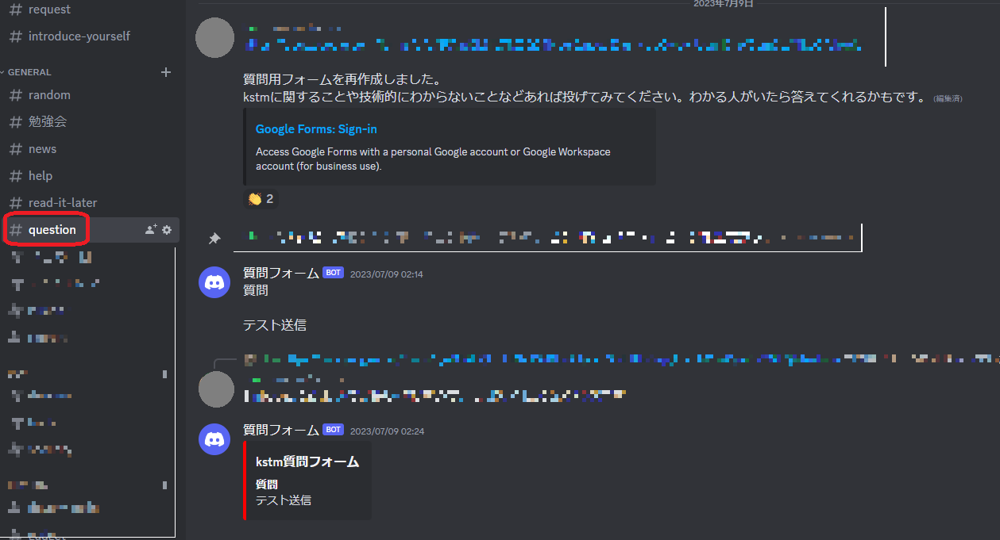

自己紹介
- 名前: hino
- 所属: 信州大学大学院修士課程総合理工学研究科工学専攻電子情報システム工学分野
- 学年: 修士1年
- 出身: 北海道札幌市
経歴
- 2019年4月 信州大学工学部電子情報システム工学科 入学
- 2023年4月 信州大学大学院修士課程総合理工学研究科工学専攻電子情報システム工学分野 入学（25年3月卒業予定）
職歴
-
2021年8月～現在 使えるねっと株式会社 カスタマーサポート アルバイト
時々バイト先で翻訳もやったりしています...。
インターンの経験
-
CARTA HOLDINGS 「Sunrise」
-
Works Human Intelligence 「課題解決能力発掘プログラム」
-
Chatwork 2Days Mobile Internship 2023
詳細
コンテスト等の出場歴
ISUCON
- 2021年 kstm 256位
- 2022年 猫度関数 228位
- 2023年 チームkstmにて出場します！！
ICTSC
- 2021夏 kstm 順位不明（確か上位1/3くらい？）
その他
-
技育博2022
サークルを代表して参加してきました。詳細は参加記にて。
参加記 -
技育CAMPハッカソン
2022.08, 2023.05, 2023.07参加野良チームで出たり、サークルの後輩と出たりと色々な人と関わるきっかけの一つだったなと思います。どの回も苦労した部分があり、思い出深いです。
-
信州ハッカソン
研究室にて参加しました。このハッカソンではありがたいことに最優秀賞を頂くことができました！
信州ハッカソン in 長野
-
趣味
-
旅行
これまでに全国33都道府県、北海道175市町村（全179市町村）訪問しています。あまり旅程を立てずフラフラと巡るのが好きです。
-
音ゲー
-
Deemo
Parodia Sonatina(Extra) 91.12%, ANiMA(hard) 97.86%, RLR(hard) 99.78%など。ANiMAはいい加減フルコンしたい。
-
Dynamix
Wave Test XRAY2（段位認定のようなもので、上から2番目の難易度）クリア程度。
-
プロセカ
Master 200FC 10APくらい。
-
Phigros
Rating 15.36 Nhelv(IN), Chronomia(IN)理論値など。
-
チュウニズム
Rating 14.22。最近一番取り組んでいる音ゲーだったりする。
元々音ゲー曲を聴いており、大学入学を機にDeemoやCytus, VOEZを始めました。その後iPadを購入してからはDynamixやプロセカ, Phigros, Arcaeaなどを触るようになり、現在は主にDeemo, Dynamix, Phigros, プロセカ, チュウニズムをプレイしています。主な実績は以下の通りです。
-
-
ソフトテニス
中学生からやってます。部活経験は中学だけですが、大学でサークルを設立したりして週1程度のペースでやっています。
制作物
-
ポモドーロタイマー
作業する際にポモドーロテクニックを使うことが多いのでReactに慣れる意味も込めて作成
-
Phigrosレート計算機
個人でローカルで動かす程度のものではあるものの、フロントエンド、バックエンド、データベース使用した初めての制作物。将来的にはユーザ認証を添えて公開したい。
-
Interviewer_AI
技育ハッカソンで作成したもの。ChatGPTのAPIを使用して面接での敬語表現に関する言い回しについて訂正を入れてくれます。実装は主にバックエンド全般（音声認識など）を担当。これも公開予定。
-
LT Host Assistant
こちらも技育ハッカソンで作成したもの。サークルの後輩と2人で制作したLT会の司会進行を支援するツール。最近部内でハッカソンを行った際にこのアイデアを更に膨らませたプロダクトを作っていたので、そこにこちらの機能を一部合併する予定
-
GPT-Soup
信州ハッカソンにてチームで制作したウミガメのスープをChatGPTがゲームマスターをすることで一人でも遊べるコンテンツ。現在はデプロイ先が相次いで有料化されたりで停止中。
-
信州大学2023年度夏季休業期間中の生協関連施設の営業状況を確認できるアプリ。
大学の長期休暇中の学食等施設の営業時間って変則的で、折角足を運んだのにお休みだったことが多かったのと、現状営業情報が得にくかったので、それならアプリにしてしまおうと思い、Streamlitで作成。あと、学内向けのものを作ることで、SNSとissueを媒体としてユーザからのレビューを得ながら継続開発する体験をしたかったのも目的だったりする。
-
所属サークルのDiscord鯖で動いている質問用botの作成
Google Formで質問した内容をGASで処理して、questionチャンネルに質問内容のみをbotが投稿するもの。これは匿名で質問ができるので、技術系の質問も遠慮せず聞きやすくなったと思われる。
